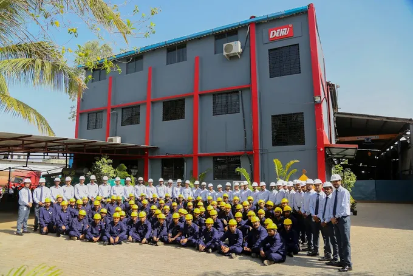

A Ghana based partner for industrial engineering
Engineering support, grounded in the region.
Stochos Engineering & Projects Limited was formed to serve industrial and infrastructure projects in Ghana and the wider West African region.
Our work centres on understanding customer requirements and coordinating the engineering, manufacturing, supply and site resources needed to fulfil them. We work with Tenaro Global EPC, a multidisciplinary engineering company headquartered in Pune, India, and its sister company Dehu Engineering (India) Private Limited, whose core work includes boilers, pressure components, heavy engineering, trading and site services.
This gives customers a local point of contact for projects that need specialist engineering and manufacturing capability.
Practical solutions, clear communication and dependable follow through.


Our approach
Understand the application
We begin with operating conditions, technical specification, schedule and site requirements.
Develop the solution
We work with the relevant engineering and manufacturing teams to define equipment or service scope.
Coordinate delivery
We support communication, documentation, supply and site interfaces throughout the agreed scope.
Certified to build pressure equipment.
The group holds ASME and IBR authorisations, BS EN 1090 certification for structural steel, and ISO quality, environmental and safety certifications.
Certifications are held by collaborating group companies, not by Stochos. ASME, IBR and ISO certifications are held by Dehu Engineering (India) Private Limited, the sister company of Tenaro Global EPC Private Limited.